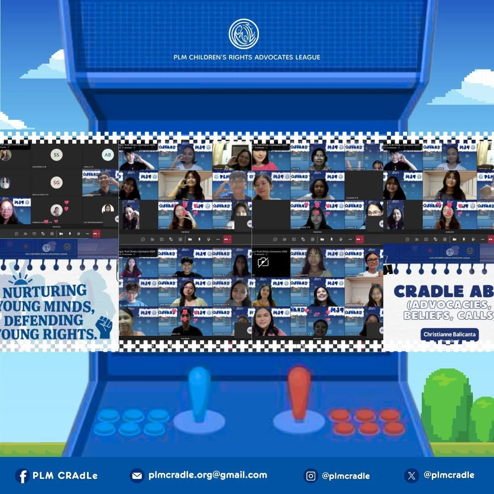
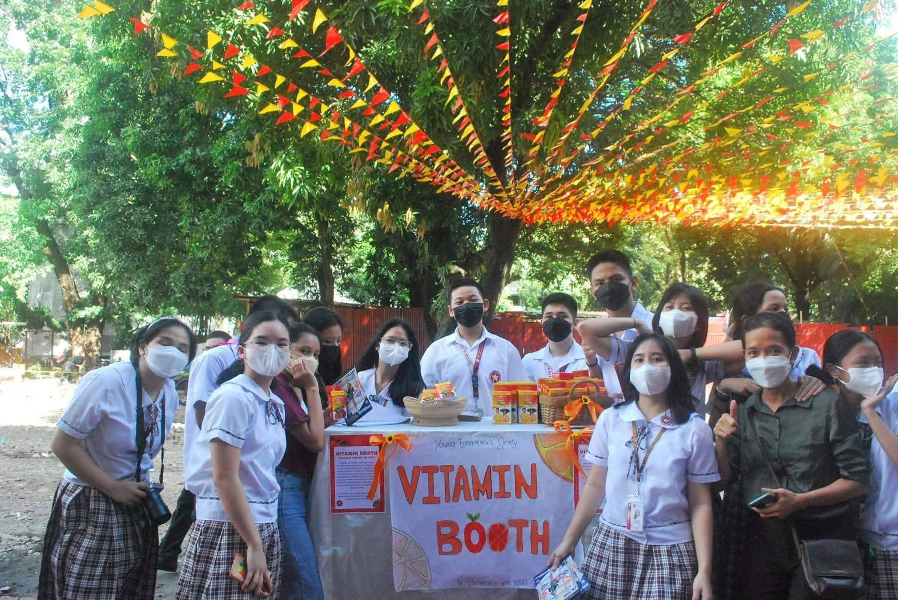
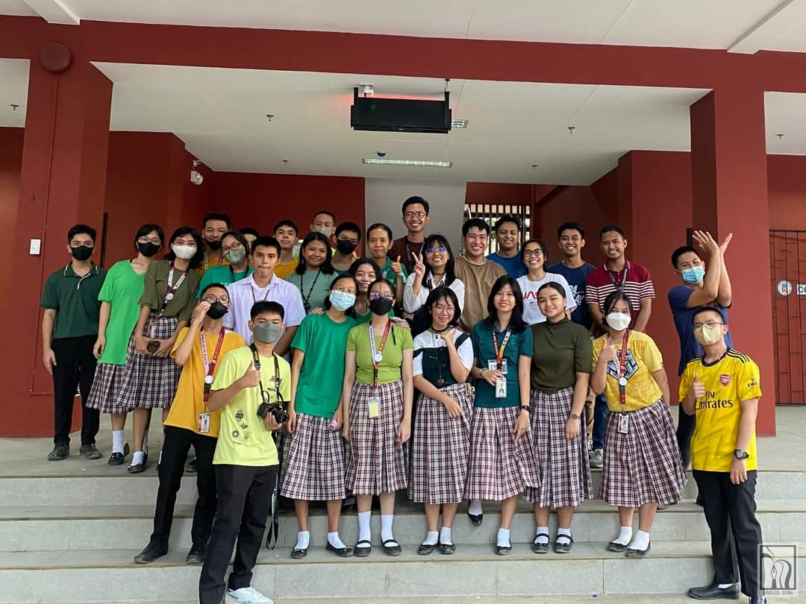

Recent Extracurriculars
Currently, I am a volunteer and member of PLM CRAdLe (PLM Children's Rights Advocates League) and the AWS (Amazon Web Services) Cloud Club - Haribon Chapter. I am looking forward to working as a part of the Recruitment Committee.
In Grade 10, I was a member of the Young Entrepreneur Society (S.Y. 2022 - 2023) wherein I worked in numerous student-led booths that sold services, worked on company sponsorships and partnered with organizations within the Laboratory High School.
In Grade 10, I was also a member of the Young Intellectual Property Advocates (S.Y. 2022 - 2023) wherein we attended various seminars and workshops that focused on protecting intellectual property, especially in the age of technology, modernization, and the current generation.
